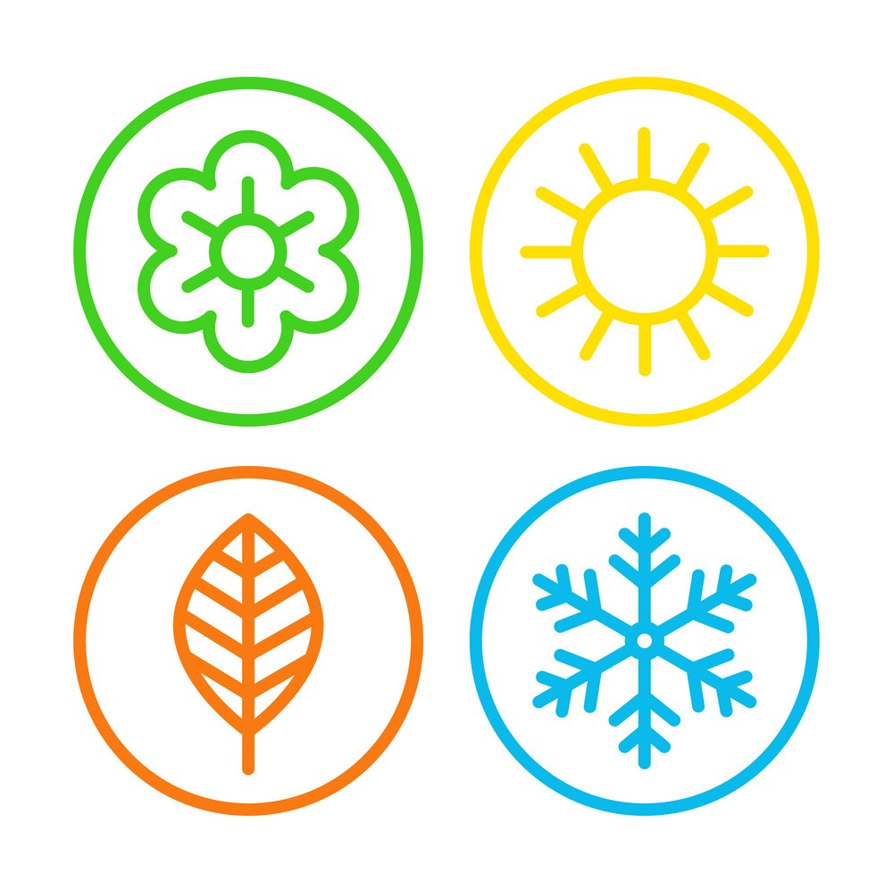

 Oddly enough there isn't much one can write about the seassons. They are typically taught to us at a very young age and are quite intuitive. There are 4 different seasons: spring, summer, fall and winter. Each season represent several different changes to come to the weather and other aspects of the world. Interesting fact, did you know that moods and different mental feelings are shifted by changes in the seasons.